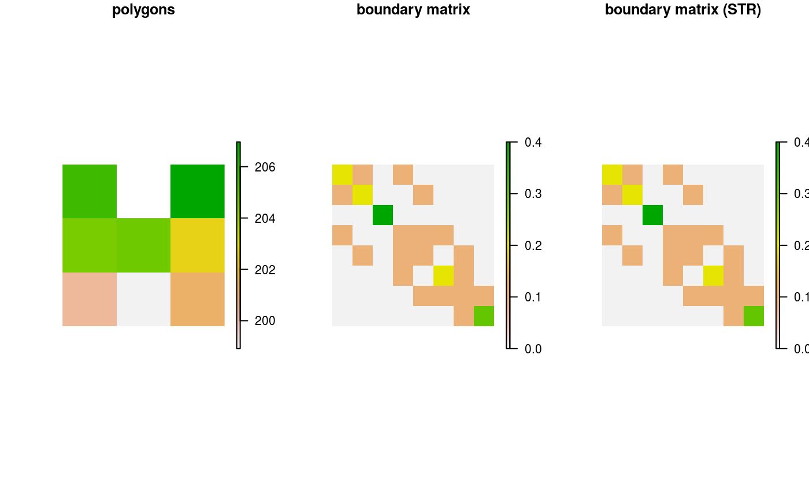

Generate a boundary matrix describing the shared and exposed edges of planning units.
boundary_matrix(x, ...) # S3 method for Raster boundary_matrix(x, ...) # S3 method for SpatialPolygons boundary_matrix(x, ...) # S3 method for SpatialLines boundary_matrix(x, ...) # S3 method for SpatialPoints boundary_matrix(x, ...) # S3 method for data.frame boundary_matrix(x, ...)
| x |
|
|---|---|
| ... | not used. |
Matrix{dsCMatrix-class} object.
This function returns a dsCMatrix-class
symmetric sparse matrix. Cells on the off-diagonal indicate the length of
the shared boundary between two different planning units. Cells on the
diagonal indicate length of a given planning unit"s edges that have no
neighbors (eg. for edges of planning units found along the
coastline). This function assumes the data are in a coordinate
system where Euclidean distances accurately describe the proximity
between two points on the earth. Thus spatial data in a longitude/latitude
coordinate system (aka WGS84)
should be reprojected to another coordinate system before using this
function.
## load data data(sim_pu_raster, sim_pu_polygons) ## create boundary matrix using raster data # crop raster to 9 cells r <- crop(sim_pu_raster, c(0, 0.3, 0, 0.3)) # make boundary matrix bm_raster <- boundary_matrix(r) ## create boundary matrix using polygon data # subset 9 polygons ply <- sim_pu_polygons[c(1:2, 10:12, 20:22), ] # make boundary matrix bm_ply <- boundary_matrix(ply) # plot raster and connected matrix par(mfrow=c(1, 2)) plot(r, main = "raster") plot(raster(as.matrix(bm_raster)), main = "boundary matrix")# plot polygons and connected matrix par(mfrow=c(1, 2)) plot(r, main = "polygons") plot(raster(as.matrix(bm_ply)), main = "boundary matrix")